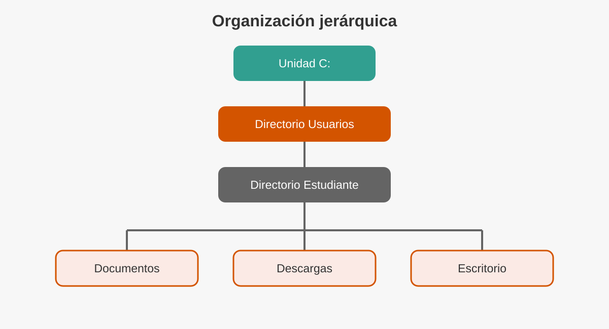
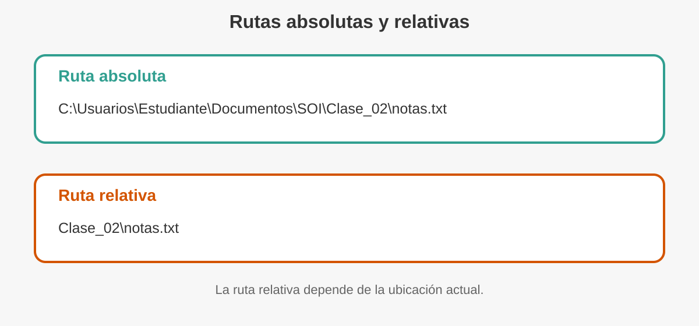
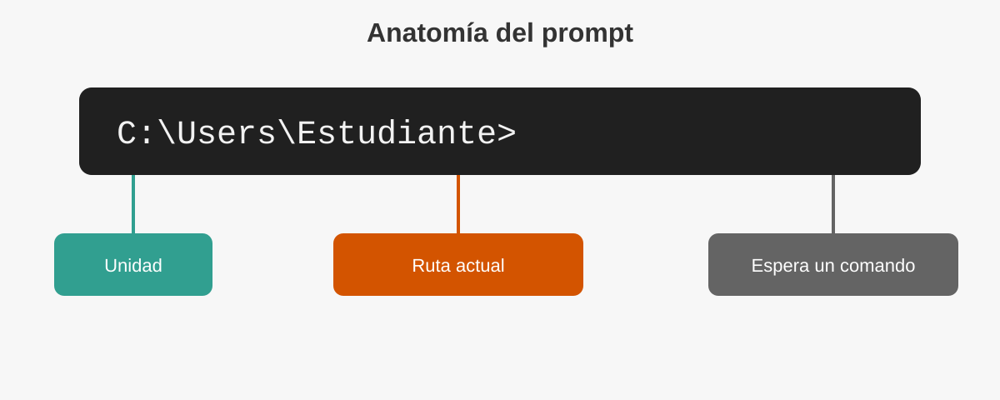
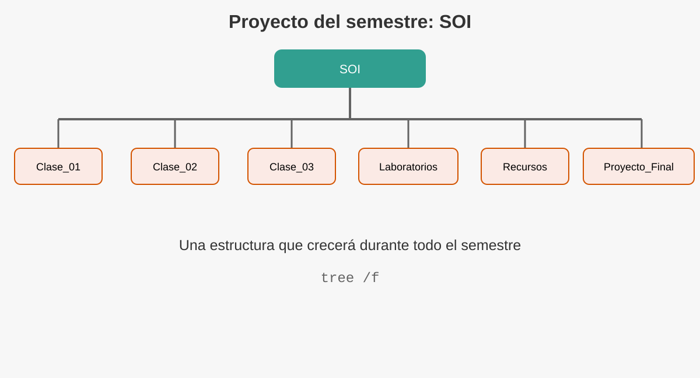

3 Administración del sistema de archivos desde la línea de comandos
Clase 2
4 Presentación de la clase
En la clase anterior estudiamos qué es un sistema operativo y por qué constituye la base de todo sistema informático. En esta sesión nos concentraremos en una de sus funciones más visibles: organizar y administrar la información almacenada.
Cada documento, fotografía, programa o proyecto necesita un lugar dentro del sistema. Cuando esa información está bien organizada, puede localizarse, copiarse, trasladarse o eliminarse con rapidez. Cuando no lo está, incluso un archivo que sigue existiendo puede parecer perdido.
La administración de archivos puede realizarse mediante ventanas e iconos, pero también a través de instrucciones escritas. Por ello, en esta clase utilizaremos el Símbolo del sistema de Windows (CMD) para comprender cómo piensa el sistema operativo cuando trabaja con unidades, directorios, rutas y archivos.
Los comandos no son palabras aisladas para memorizar. Son instrucciones que expresan una necesidad concreta: ver, entrar, crear, copiar, mover, renombrar o eliminar.
4.1 Objetivos de aprendizaje
Al finalizar esta clase, el estudiante será capaz de:
- Explicar cómo organiza el sistema operativo la información.
- Diferenciar unidades, directorios, subdirectorios y archivos.
- Interpretar rutas absolutas y relativas.
- Reconocer la función del intérprete de comandos de Windows.
- Utilizar comandos básicos para navegar y organizar información.
- Aplicar buenas prácticas para evitar errores durante la administración de archivos.
4.2 Ruta de trabajo de la sesión
| Momento | Actividad | Tiempo aproximado |
|---|---|---|
| Inicio | Situación problemática y conceptos base | 15 min |
| Desarrollo | Directorios, archivos, rutas y CMD | 20 min |
| Laboratorio | Construcción del proyecto SOI |
35 min |
| Aplicación | Reto guiado y análisis de errores | 15 min |
| Cierre | Síntesis y autoevaluación | 5 min |
5 ¿Dónde está realmente un archivo?
Imagine que debe entregar un proyecto al finalizar la clase. Está seguro de haberlo guardado, pero no recuerda si quedó en Documentos, Descargas, Escritorio o una memoria USB.
El archivo no necesariamente se perdió. El problema puede ser que desconoce su ubicación.
Los sistemas operativos resuelven esta situación mediante una organización jerárquica. En lugar de almacenar toda la información en un único espacio, la distribuyen en unidades, directorios y subdirectorios.

En esta estructura:
- La unidad representa un dispositivo o volumen de almacenamiento.
- El directorio agrupa información relacionada.
- El subdirectorio es un directorio ubicado dentro de otro.
- El archivo contiene los datos que utiliza el usuario o una aplicación.
Un archivo bien nombrado y guardado en una estructura lógica puede ahorrar más tiempo que cualquier comando avanzado.
6 El sistema de archivos
Un sistema de archivos es el conjunto de reglas y estructuras que utiliza el sistema operativo para registrar, organizar, localizar y proteger la información dentro de un dispositivo de almacenamiento.
El usuario observa carpetas y nombres. Internamente, el sistema operativo también mantiene datos como:
- ubicación lógica;
- tamaño;
- fecha de creación y modificación;
- permisos;
- atributos;
- relación entre directorios y archivos.
La organización lógica evita que el usuario deba conocer el lugar físico exacto donde se encuentran los datos dentro del dispositivo.
6.1 Unidades de almacenamiento
En Windows, las unidades suelen identificarse mediante una letra seguida de dos puntos:
C:
D:
E:La unidad C: suele contener el sistema operativo y los perfiles de usuario. Otras letras pueden representar particiones, memorias USB, discos externos, unidades ópticas o recursos conectados.
La letra no indica por sí sola el tipo de dispositivo. Una memoria USB puede aparecer como D:, E: o cualquier otra letra disponible.
6.2 Directorios y carpetas
En Windows se utiliza con frecuencia la palabra carpeta. En el lenguaje técnico y en la línea de comandos se emplea el término directorio.
Ambos describen una estructura que permite agrupar archivos y otros directorios.
C:\
└── Usuarios
└── Estudiante
├── Documentos
├── Descargas
└── Escritorio6.3 Archivos y extensiones
Un archivo es una unidad de información identificada mediante un nombre.
informe.docx
presupuesto.xlsx
programa.cpp
manual.pdf
imagen.pngLa parte ubicada después del último punto se denomina extensión. Esta ayuda al sistema operativo y a las aplicaciones a reconocer el formato del archivo.
Cambiar fotografia.jpg por fotografia.pdf no transforma la imagen en un PDF. Solo modifica el nombre.
7 Rutas: la dirección de la información
Una ruta indica la ubicación de un archivo o directorio dentro de la jerarquía del sistema.

7.1 Ruta absoluta
Una ruta absoluta comienza desde la unidad y describe el recorrido completo.
C:\Usuarios\Estudiante\Documentos\SOI\Clase_02\notas.txtEsta ruta puede interpretarse de izquierda a derecha:
- Unidad
C:. - Directorio
Usuarios. - Perfil
Estudiante. - Directorio
Documentos. - Proyecto
SOI. - Directorio
Clase_02. - Archivo
notas.txt.
7.2 Ruta relativa
Una ruta relativa se interpreta desde la ubicación actual.
Si la ubicación actual es:
C:\Usuarios\Estudiante\Documentos\SOIla ruta relativa hacia el archivo anterior sería:
Clase_02\notas.txtEl símbolo .. representa el directorio superior.
cd ..significa:
Subir un nivel dentro de la estructura.
7.3 Separadores y espacios
Windows utiliza la barra invertida \ para separar los componentes de una ruta.
Cuando una ruta contiene espacios, es recomendable escribirla entre comillas:
cd "C:\Usuarios\Estudiante\Mis documentos"8 De la interfaz gráfica a la línea de comandos
La interfaz gráfica permite administrar información mediante ventanas, iconos, menús y el puntero. La interfaz de línea de comandos permite hacerlo escribiendo instrucciones.
| Interfaz gráfica | Línea de comandos |
|---|---|
| Utiliza ventanas e iconos | Utiliza instrucciones escritas |
| Es visual e intuitiva | Es precisa y reproducible |
| Facilita tareas ocasionales | Facilita automatización y diagnóstico |
| Requiere navegación manual | Puede ejecutar secuencias rápidamente |
Ninguna reemplaza completamente a la otra. Un profesional utiliza la herramienta más adecuada para cada situación.
9 ¿Qué es un comando?
Un comando es una instrucción que el usuario entrega a un intérprete para solicitar una acción.
Ejemplos:
dirSolicita mostrar el contenido del directorio actual.
mkdir Clase_02Solicita crear un directorio llamado Clase_02.
copy notas.txt respaldo.txtSolicita crear una copia del archivo.
Los comandos pueden aceptar:
- argumentos, que indican sobre qué elemento trabajar;
- opciones, que modifican la forma en que se ejecuta la instrucción.
Ejemplo:
dir /wdires el comando./wes una opción que muestra una vista resumida.
10 CMD en Windows
El Símbolo del sistema, también conocido como CMD, es un intérprete de comandos incluido en Windows.
No debe confundirse con MS-DOS. Aunque conserva numerosos comandos históricos, CMD funciona dentro de Windows y utiliza los servicios del sistema operativo actual.
10.1 Cómo abrirlo
Puede abrirse de distintas maneras:
- Presionar la tecla Windows.
- Escribir
cmd. - Seleccionar Símbolo del sistema.
También puede utilizarse la ventana Ejecutar:
Windows + RLuego escribir:
cmdy presionar Enter.
Para esta práctica no es necesario abrir CMD como administrador. Trabajar con privilegios elevados aumenta el impacto de un error.
11 Anatomía del prompt
Al abrir CMD aparece una línea similar a:
C:\Users\Estudiante>
El prompt muestra la ubicación actual y termina con el símbolo > para indicar que el intérprete espera una instrucción.
C: unidad
\Users\Estudiante ruta actual
> espera un comandoCada vez que cambia de directorio, el prompt también cambia. Por eso funciona como una brújula dentro del sistema de archivos.
12 Laboratorio narrativo: construyendo el proyecto SOI
12.1 Situación
Durante el semestre se generarán apuntes, prácticas, recursos y entregables. Para evitar que todo quede mezclado, construiremos una estructura permanente llamada SOI.
El laboratorio se realizará dentro de Documentos. No trabaje en directorios del sistema como C:\Windows o C:\Program Files.
12.2 Paso 1. Saber dónde estamos
Escriba:
cdCMD mostrará la ruta actual.
También puede observarla directamente en el prompt.
12.3 Paso 2. Ver el contenido
Ejecute:
dirEl comando dir muestra directorios y archivos de la ubicación actual.
En la salida encontrará datos como:
- fecha y hora;
- indicador
<DIR>para directorios; - tamaño de archivos;
- nombre de cada elemento.
12.3.1 Variantes útiles
dir /wMuestra una vista resumida.
dir /pPausa la salida cuando ocupa más de una pantalla.
dir *.txtMuestra únicamente archivos con extensión .txt.
Antes de crear, mover o borrar algo, use dir. Confirmar la ubicación reduce errores.
12.4 Paso 3. Ir a Documentos
Según el idioma y la configuración de Windows, el nombre visible puede variar. Una forma práctica es utilizar la variable del perfil:
cd /d "%USERPROFILE%\Documents"Si la carpeta se muestra en español pero la ruta interna utiliza Documents, el comando seguirá funcionando.
La opción /d permite cambiar de unidad y directorio en una sola instrucción.
12.5 Paso 4. Crear el directorio principal
mkdir SOITambién puede utilizarse la forma abreviada:
md SOIAmbos comandos crean el directorio.
Compruebe el resultado:
dir12.6 Paso 5. Entrar al proyecto
cd SOIEl prompt debería terminar de forma similar a:
...\Documents\SOI>12.7 Paso 6. Crear la estructura del semestre
Ejecute:
mkdir Clase_01 Clase_02 Clase_03 Laboratorios Recursos Proyecto_FinalLuego verifique:
dirLa estructura esperada es:
SOI
├── Clase_01
├── Clase_02
├── Clase_03
├── Laboratorios
├── Recursos
└── Proyecto_Final
12.8 Paso 7. Visualizar el árbol
Ejecute:
treePara incluir también archivos:
tree /ftree permite comprobar visualmente la jerarquía construida.
14 Crear archivos de práctica
Para continuar necesitamos archivos sencillos.
Ubíquese dentro de Clase_02:
cd /d "%USERPROFILE%\Documents\SOI\Clase_02"Cree un archivo de texto:
echo Apuntes de la Clase 2 > apuntes.txtAgregue una segunda línea:
echo Practica de comandos de Windows >> apuntes.txtLos operadores utilizados son:
>crea o reemplaza el contenido.>>agrega contenido al final.
Compruebe el archivo:
dirMuestre su contenido:
type apuntes.txtEl operador > reemplaza el contenido existente. Antes de usarlo sobre un archivo importante, compruebe el nombre y la ruta.
15 Copiar archivos con copy
El comando copy crea una copia de uno o varios archivos.
15.1 Copiar en el mismo directorio
copy apuntes.txt respaldo_apuntes.txt15.2 Copiar hacia otro directorio
copy apuntes.txt ..\Recursos\La ruta ..\Recursos\ significa:
- subir desde
Clase_02haciaSOI; - entrar en
Recursos.
Compruebe el resultado:
dir ..\Recursos15.3 Evitar sobrescrituras accidentales
Puede utilizar:
copy /-y apuntes.txt respaldo_apuntes.txtLa opción /-y solicita confirmación antes de reemplazar un archivo existente.
16 Renombrar con ren
El comando ren cambia el nombre de un archivo o directorio.
ren respaldo_apuntes.txt apuntes_copia.txtCompruebe:
dirLa instrucción cambia el nombre, pero no traslada el archivo a otra ubicación.
rencambia el nombre.movecambia la ubicación y también puede cambiar el nombre.
17 Mover con move
Para trasladar un archivo:
move apuntes_copia.txt ..\Laboratorios\Compruebe el directorio de destino:
dir ..\LaboratoriosTambién puede mover y renombrar en una sola instrucción:
move apuntes.txt ..\Laboratorios\bitacora_clase_02.txt18 Eliminar archivos con del
El comando del elimina archivos.
Primero cree un archivo temporal:
echo Archivo temporal > temporal.txtCompruebe:
dirLuego elimínelo solicitando confirmación:
del /p temporal.txtLos archivos eliminados desde CMD normalmente no pasan por la Papelera de reciclaje. Verifique siempre la ruta, el nombre y los comodines antes de confirmar.
18.1 Riesgo de los comodines
del *.txtelimina todos los archivos .txt del directorio actual.
Este tipo de instrucción no debe ejecutarse sin revisar previamente:
dir *.txtLa secuencia profesional es:
1. Mostrar
2. Verificar
3. Ejecutar19 Eliminar directorios con rmdir
rmdir o rd elimina directorios.
19.1 Directorio vacío
mkdir Prueba_Vacia
rmdir Prueba_Vacia19.2 Directorio con contenido
rmdir /s CarpetaLa opción /s incluye todo su contenido.
Para solicitar confirmación:
rmdir /s CarpetaPara omitirla existe /q, pero no debe utilizarse durante el aprendizaje:
rmdir /s /q Carpetarmdir /s /q puede eliminar una estructura completa sin preguntar. No lo utilice fuera de carpetas de práctica.
20 Limpiar la pantalla con cls
clsEste comando limpia la pantalla, pero no elimina archivos ni modifica la ubicación actual.
Después de ejecutarlo, el prompt continúa en el mismo directorio.
21 Resumen de comandos
| Necesidad | Comando principal | Ejemplo |
|---|---|---|
| Mostrar ubicación | cd |
cd |
| Listar contenido | dir |
dir /w |
| Cambiar directorio | cd |
cd Clase_02 |
| Crear directorio | mkdir o md |
mkdir Recursos |
| Mostrar árbol | tree |
tree /f |
| Mostrar texto | type |
type apuntes.txt |
| Copiar archivo | copy |
copy a.txt b.txt |
| Renombrar | ren |
ren a.txt b.txt |
| Mover | move |
move a.txt ..\Recursos\ |
| Eliminar archivo | del |
del /p a.txt |
| Eliminar directorio | rmdir o rd |
rmdir Carpeta |
| Limpiar pantalla | cls |
cls |
22 Reto de aplicación
22.1 Escenario
El directorio SOI debe quedar organizado de la siguiente manera:
SOI
├── Clase_01
├── Clase_02
├── Clase_03
├── Laboratorios
│ └── bitacora_clase_02.txt
├── Recursos
│ └── apuntes.txt
└── Proyecto_Final22.2 Reglas
Realice el reto únicamente con comandos.
- Compruebe la ubicación actual.
- Navegue hasta
SOI. - Use
tree /fpara revisar la estructura. - Asegúrese de que
apuntes.txtesté enRecursos. - Asegúrese de que
bitacora_clase_02.txtesté enLaboratorios. - Elimine únicamente archivos temporales creados durante la práctica.
- Muestre el árbol final.
22.3 Evidencia sugerida
El estudiante puede entregar:
- captura del comando
tree /f; - lista de comandos utilizados;
- explicación breve de un error cometido y cómo lo corrigió.
23 Diagnóstico de errores frecuentes
23.1 “El sistema no puede encontrar la ruta especificada”
Posibles causas:
- el directorio no existe;
- el nombre fue escrito incorrectamente;
- la ruta contiene espacios y no se utilizaron comillas;
- la ubicación actual no es la esperada.
Acciones:
cd
dirLuego revise la ruta paso a paso.
23.2 “El sistema no puede encontrar el archivo especificado”
Compruebe:
dir
dir *.txtRevise el nombre y la extensión real.
23.3 “Acceso denegado”
Puede ocurrir cuando:
- el archivo está protegido;
- otro programa lo utiliza;
- el usuario no posee permisos;
- se trabaja en un directorio del sistema.
No resuelva automáticamente el problema ejecutando todo como administrador. Primero determine la causa.
23.4 El comando se ejecutó en el lugar equivocado
Compruebe siempre el prompt. Una instrucción correcta ejecutada en un directorio incorrecto puede producir un resultado no deseado.
Cuando se sienta perdido:
cd
dirPrimero determine dónde está. Luego decida a dónde necesita ir.
24 Buenas prácticas
- Utilice nombres descriptivos.
- Evite crear todos los archivos en el Escritorio.
- Compruebe la ubicación antes de modificar información.
- Use
dirantes de aplicar comandos destructivos. - Practique con archivos temporales.
- No trabaje como administrador sin necesidad.
- Mantenga respaldos de los archivos importantes.
- Lea los mensajes del sistema antes de repetir una instrucción.
25 Autoevaluación
25.1 Selección breve
- ¿Qué representa
C:?- Un archivo
- Una unidad
- Un comando
- Una extensión
- ¿Qué comando muestra el contenido del directorio actual?
show
list
dir
type
- ¿Qué significa
..dentro de una ruta?- Directorio actual
- Directorio superior
- Unidad principal
- Archivo oculto
- ¿Cuál comando crea un directorio?
mkdir
copy
type
cls
- ¿Cuál acción requiere mayor precaución?
dir
cd
del
cls
25.2 Preguntas de reflexión
- ¿Por qué una ruta absoluta funciona aunque el usuario se encuentre en otro directorio?
- ¿Qué ventaja ofrece una ruta relativa?
- ¿Por qué conviene ejecutar
dirantes dedel? - ¿Qué diferencia existe entre copiar y mover?
- ¿Por qué CMD no debe presentarse simplemente como MS-DOS?
26 Resumen de la clase
En esta clase aprendimos que:
- El sistema operativo organiza la información mediante un sistema de archivos.
- Las unidades contienen directorios, subdirectorios y archivos.
- Una ruta expresa la ubicación de un elemento.
- Las rutas pueden ser absolutas o relativas.
- CMD permite comunicarse con Windows mediante comandos.
dir,cd,mkdirytreepermiten explorar y construir estructuras.copy,renymovepermiten reorganizar archivos.delyrmdirrequieren especial cuidado.- Una práctica profesional comienza por verificar la ubicación y el contenido.
La línea de comandos se domina practicando. La velocidad llegará después; primero deben desarrollarse precisión, lectura y criterio.
27 Tarea sugerida
Construya desde CMD una estructura para organizar sus cursos del semestre:
Universidad
├── Sistemas_Operativos_I
├── Algoritmos
├── Programacion
└── Proyecto_SemestralDentro de cada curso cree:
Apuntes
Laboratorios
Tareas
RecursosGenere un archivo descripcion.txt en cada curso y escriba una línea que describa su propósito. Entregue el resultado de:
tree /f28 Cierre
En la próxima clase estudiaremos herramientas de administración de Windows que permiten inspeccionar configuración, servicios, inicio del sistema y otros componentes. El objetivo no será abrir utilidades por curiosidad, sino comprender qué problema resuelve cada una y qué riesgos implica modificarla.